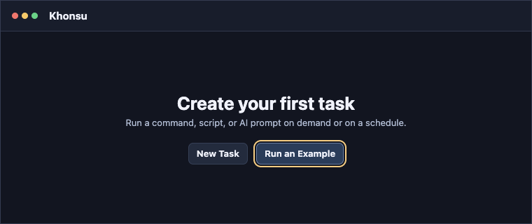
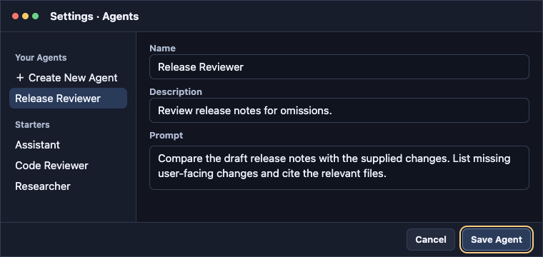

Khonsu tutorials
Run a command, put it on a schedule, and see what happened. Follow along in Khonsu for macOS 14 or later.
Try the built-in example
See a task go from start to result with the local text report bundled with Khonsu.
- On the welcome screen, click Run an Example.
- Open Overview for the result or Logs for the output. The example counts the words and lines in bundled text.
- To repeat it, select sample-text-report and click Run.


Run your own command
Start with a command that prints a line of text.
- Click New Task and choose Command.
- Enter
/bin/echo "Hello from Khonsu"and name the task hello-khonsu. - Leave Run set to On demand and click Save Task.
- Select the task and click Run. In Logs, look for
Hello from Khonsu.

Schedule a daily task
Give an existing task a regular time to run.
- Select hello-khonsu and click Edit in the task details.
- Under Schedule, set Run to Daily and choose 9:00 AM.
- Check the timezone and the preview of the next run. Save the task, then look under Overview → Schedule to confirm when it will run.

Reuse an agent prompt
Save instructions you reach for often, such as a checklist for reviewing release notes.
- Open Khonsu → Settings → Agents. Choose a starter such as Code Reviewer and click Duplicate, or click Create New Agent.
- Fill in Name, Description, and Prompt. Click Save Agent.
- Create an AI Prompt task and select your agent under Use Agent Prompt. Khonsu copies the prompt into Instruction, where you can tailor it to the task.
- Choose an available runner under Run with. If it needs setup, open Settings → Advanced for Coding Agents or AI Providers.


Tasks keep the prompt text they were saved with. To pick up a later edit to the agent, apply its prompt to the task again.
Review and pause a task
Check the last run before deciding whether the task should keep running on its schedule.
- Select the task and open History. Pick a run to inspect its status, then use Logs to see output or errors.
- To pause future runs, switch the task off using its schedule toggle. You can find paused tasks under More filters → Paused schedules.
- Switch the task back on when you are ready. Overview → Schedule shows the next run.